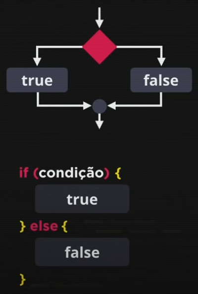

Javascript é formado por um código sequêncial, ou seja é preciso seguir uma ordem lógica.
Na ordem do código, o processo de definir caminhos diferentes é chamado de desvio condicional.
Definimos a condição no javascript com o if(se), a primeira possibilidade colocamos dentro de um bloco {}, a segunda usamos a palavra else(se não) mais a possibilidade. Isso é a estrutura de condições:
Existem tipos de condição, nessa aula veremos dois:
Dica: se intalar o node.js exec podemos apertar f8 para abrir o node no codevs.